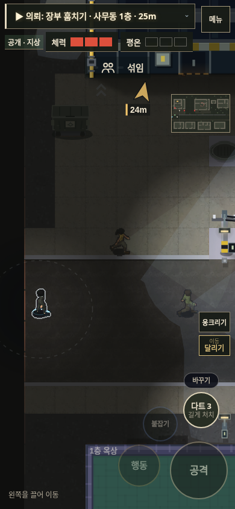
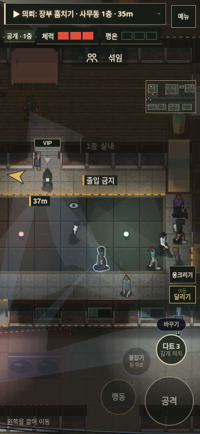

<!doctype html><html lang="ko"><meta charset="utf-8"><meta name="viewport" content="width=device-width,initial-scale=1"><title>야행 v113 · 준비가 매복이 되는 의뢰</title><style>
*{box-sizing:border-box}body{margin:0;background:#111614;color:#e3dfd0;font:16px/1.65 system-ui,sans-serif}main{max-width:1060px;margin:auto;padding:32px 22px 64px}h1{font-size:30px;font-weight:600;margin:6px 0 14px}h2{font-size:21px;margin:0 0 8px}p{color:#b6bcac;margin:8px 0 18px}header{border-bottom:1px solid #3b4336;padding-bottom:25px;margin-bottom:30px}a{color:#d7c28b;text-underline-offset:4px}header a{display:inline-block;border:1px solid #807650;padding:8px 16px;text-decoration:none}.movie video{display:block;width:100%;aspect-ratio:10/7;max-height:650px;background:#080c0a;border:1px solid #394030}.movie small{display:block;color:#9da793;margin-top:8px}.grid{display:grid;grid-template-columns:1fr 1fr;gap:30px;margin-top:40px}.compare img{display:block;width:100%;max-width:390px;margin:auto;border:1px solid #3b4336}.tabs{display:flex;gap:8px;margin:12px 0}.tabs button{font:inherit;cursor:pointer;padding:6px 14px;color:#c0c6b6;background:transparent;border:1px solid #46513c}.tabs button[aria-pressed=true]{background:#c4bb96;color:#141a12;border-color:#c4bb96}footer{margin-top:32px;color:#a5ae9a;font-size:14px}@media(max-width:580px){main{padding:24px 16px}.grid{grid-template-columns:1fr}h1{font-size:25px}}
</style><main><header><span>야행 · v113</span><h1>준비가 매복이 되는 의뢰</h1><p>장부를 훔친 뒤, 사무동 내선으로 실장을 불러낼 수 있습니다.<br>같은 건물을 침투 장소와 매복 장소로 활용합니다.</p><a href="https://kkhkkh20-bit.github.io/yahaeng/tone-study/game.html?v=113">게임 실행</a></header><section class="movie"><h2>전화 → 은신 → 도착 → 매복</h2><video controls muted loop playsinline preload="metadata" poster="arrival.png" aria-label="내선으로 실장을 불러 사무동에서 매복하는 실제 게임 동작"><source src="ambush.mp4" type="video/mp4"></video><small>검증 플레이 재생입니다. 장부를 회수한 상태에서 시작하며 표적을 기다리는 이동 구간은 4배속입니다. 이 영상에서는 호출 대상과 호위의 AI를 실행하고 다른 인물은 고정했습니다. 전체 NPC를 포함한 공략 난이도 검증과는 구분합니다.</small></section><section class="grid"><article class="compare" data-scene="street"><h2>거리 · 평상시 표시</h2><div class="tabs" role="group" aria-label="거리 · 평상시 표시 전후 비교"><button aria-pressed="false" data-v="before">이전 v112</button><button aria-pressed="true" data-v="after">현재 v113</button></div></article><article class="compare" data-scene="club"><h2>클럽 · 인물과 동선</h2><div class="tabs" role="group" aria-label="클럽 · 인물과 동선 전후 비교"><button aria-pressed="false" data-v="before">이전 v112</button><button aria-pressed="true" data-v="after">현재 v113</button></div></article></section><footer><a href="https://github.com/kkhkkh20-bit/yahaeng/blob/main/docs/PLAY_LOOP_V113.md">변경·검증 내역</a></footer></main><script>document.querySelectorAll('.compare').forEach(card=>card.querySelectorAll('button').forEach(b=>b.addEventListener('click',()=>{card.querySelector('img').src=card.dataset.scene+'-'+b.dataset.v+'.png';card.querySelector('img').alt=card.querySelector('h2').textContent+' '+b.textContent;card.querySelectorAll('button').forEach(x=>x.setAttribute('aria-pressed',String(x===b)));})));</script></html>
